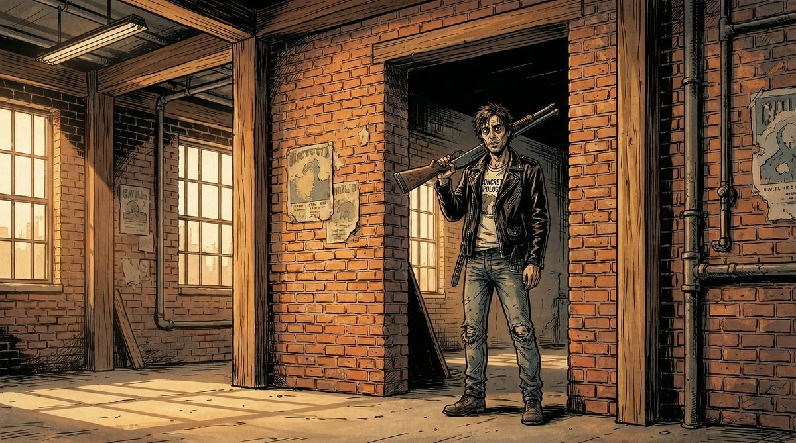
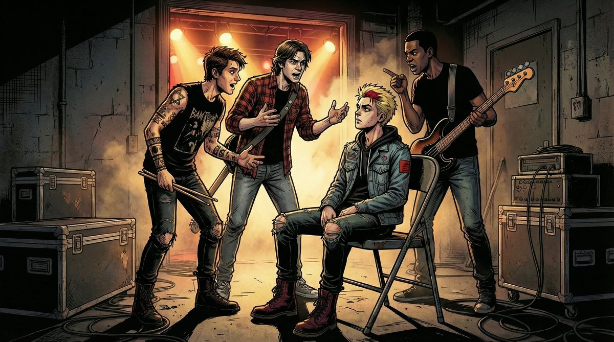

FlowBoard and the Consistency Problem

For a few months, I have been building FlowBoard — a node-based tool for managing AI image generation workflows. Over the past two weeks, I pushed four complete stories through it — 226 images total — to stress-test the system and figure out what features to build next.
The core problem FlowBoard addresses is consistency. AI image generators have no memory between calls. Your character in scene 1 bears little resemblance to the same character in scene 5. The same room looks completely different from two camera angles. Everyone generating sequences of related images knows this.
FlowBoard's approach: make the intent explicit and reusable. You build a graph of components — characters, settings, styles, camera setups — and wire them together into shots. You can see why a shot looks the way it does by tracing the graph. You change a character portrait once, and it propagates everywhere that character appears.
The question I keep working on: what features would shift the ratio from correction toward generation?
How the Pipeline Works
The workflow has evolved into this:
Screenplay (.md)
→ Master FlowBoard file
→ Character portrait generation
→ Scene files with portraits wired in
→ First-pass image generation
→ Contact sheet review
→ Corrections
→ ExportBefore generating any story shots, I generate character portraits. These become the visual anchor. When a character appears in a scene, their portrait gets sent to the image generation API as a reference image alongside the assembled prompt. FlowBoard supports multiple providers — Gemini, fal.ai, and Stability AI — though this testing focused on the Gemini adapter.


Character portraits for "Damon and the Shotgun." FlowBoard wires these to every scene where the character appears.
One detail that emerged from testing: wiring the portrait to both the character node and the output node produces better results than wiring it only to the character. Without the second connection, Gemini often ignores the reference. I do not have a theory for why — just an observation from 200+ shots.
What the Data Shows
After 226 images across four stories:
Character consistency improved significantly. Not perfect — Gemini still drifts in wide shots with multiple characters — but the portraits reduced the most egregious mismatches. Mason looks recognizably like Mason across most shots.
First-pass generation is fast. 49 shots in about 35 minutes. FlowBoard removes the friction of writing prompts from scratch. Whether that speed justifies the setup depends on volume.
Corrections remain the bottleneck. First pass gets maybe 70% of shots to an acceptable state. The remaining 30% — expressions, prop bleeding, spatial relationships — takes longer than initial generation. Some shots needed 8 iterations.

"Damon and the Shotgun" — the inciting incident. The shotgun bled into unrelated scenes throughout the story, requiring manual fixes.
What Works, What Does Not
What Seems to Help
- Portrait references — faces and clothing stay more consistent
- Minimal text descriptions — "use the reference image" beats detailed text that contradicts the portrait
- Negative prompts — blocking text, logos, speech bubbles prevents most unwanted additions
- Cross-scene editing — using a correct shot as reference to fix an incorrect one
- Contact sheets — seeing all shots together makes problems obvious
What Remains Difficult
- Spatial consistency — the same room looks different from different angles
- Prop bleeding — dominant props leak into unrelated scenes
- Expression calibration — Gemini interprets emotions at maximum intensity
- Multi-character wide shots — 4+ people at distance rarely comes out right
- Precise positioning — placing elements at specific sizes and angles is tedious
Cross-Scene Reference Editing
The most useful correction pattern: using a shot from one scene as reference to fix another. When D8-2 had the right prop setup (cloth under the shotgun, scattered shells), I could fix D8-1 by sending D8-2 as reference with the instruction "add the cloth and shells from the second image."
This shot became the "source of truth" for prop continuity in related scenes.
Teaching by example works better than teaching by description. "Make this look like that" is more reliable than trying to describe the desired state in text.
This observation led to the next feature.
The New Feature: Setting References
If character portraits help with people, maybe location references would help with spaces. Today I added setting reference support to FlowBoard.
The idea: generate establishing shots of each setting before the first pass — empty rooms with key props and architectural details — and wire them to all shots in that scene. The pipeline now looks like:
Character Sheets → Setting References → Wire Both → Generate → CorrectionsI tested it on a conference room scene from "Damon and the Shotgun" — glass walls, a table with props, specific lighting. Generated two clean setting references (wide establishing shot from the doorway, lower angle from the table) and wired them to a couple test shots.

"Courtroom Collapse" — 48 shots in the same courtroom. The next test case for setting references.
Initial results: The room maintained its glass walls and general layout across different camera angles. Props in the setting reference (the cloth, shells, coffee cup) propagated without separate prop refs. Clean refs without people work better than using an existing scene shot — no character bleed into unrelated shots.
Open Questions
The setting reference work is new. Things I do not know yet:
- Does Gemini reason about spatial relationships, or just blend? When given two angles of the same room, does it understand they show the same space? Or does it average them into something incoherent?
- How many references are too many? The API accepts up to 14 reference images. Character portraits already consume some of that budget. At what point does adding more references degrade results?
- What should setting references contain? My initial tests used empty rooms with props. Maybe including a character in one helps establish scale. I have not tested enough to know.
The test case is the courtroom from "Courtroom Collapse" — 48 shots with well-defined architectural features. If setting references can maintain consistency there, the technique is worth the setup. If the courtroom still looks different in every shot, I need to rethink the approach.
What Success Would Look Like
I am not trying to eliminate corrections. That seems unrealistic. The goal is to shift the ratio.
Concretely: if first-pass usability goes from 70% to 80-85%, that is meaningful at scale. Right now, 30% of shots need significant rework. Cutting that to 15-20% changes the economics of longer projects.
The other criterion: shots that are supposed to match should match. A character's outfit should not change between scenes. A room should be recognizable from multiple angles. These are the failures that break the illusion of a coherent visual story.

"Accidental Frontman" — four characters, consistent outfits, correct instruments. One of the harder shots to get right.
What I Expect to Be Hard
Multi-character wide shots will probably remain difficult. Gemini struggles with complex spatial arrangements — who stands where, which direction they face, what instruments they hold. Portrait references help with faces but do not solve positioning.
I also expect diminishing returns from adding references. At some point, the model has too much conflicting information and produces worse results than with fewer constraints. Finding that threshold will take more testing.
The deeper issue is that these models have no persistent understanding of the world they are depicting. Each generation is stateless. FlowBoard's job is to compensate — to carry context across calls that the model cannot carry itself. That works up to a point. Finding where that point is, and building features that extend it, is the ongoing work.